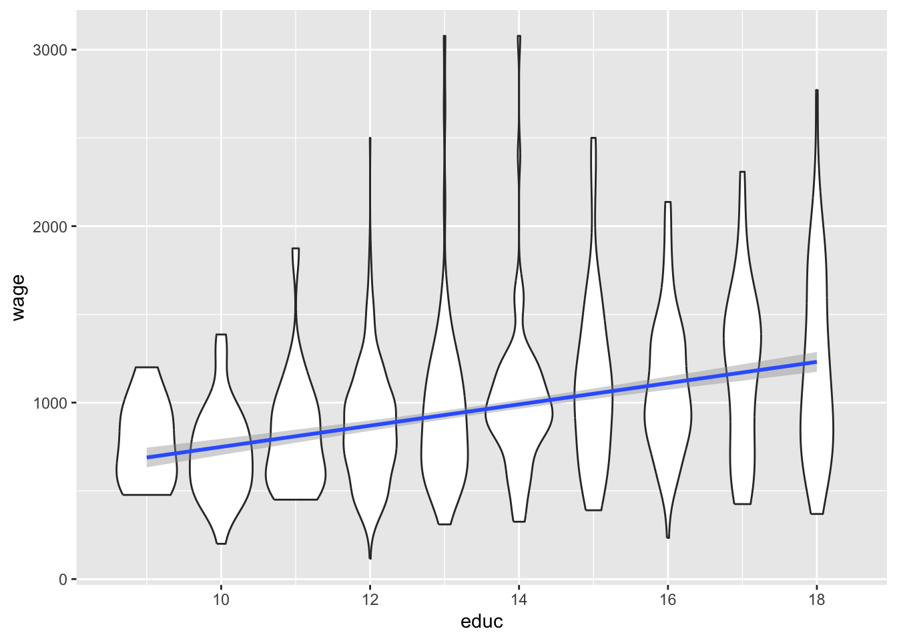

4 Module 4 Probability
4.0.1 Overview
Big data fundamentally relies on the ability to analyze, draw conclusions, or make predictions from existing data and about new data. In this course, we will do a complete conceptual tour of the full taxonomy of data methods. The first part of this will be to focus on understanding probability and sampling, which always used, either implicitly or explicitly, in all data analysis.
- Identify sampling assumptions in statements about data
- Recall their knowledge of probability
- Recall their knowledge of how the law of large numbers applies to big data
4.1 Probability Part I: Random Variables
Module 4.1 - Probability Part I: Random Variables (7:04)
4.1.1 Probability
- Study of uncertainty through the study of random variables
- Has a set of potential outcomes
- Has a probability distribution over outcomes
- Example: The outcome of a dice role as a random variable
- Set of potential outcomes: 1, 2, 3, 4, 5, 6
- Probability distribution f (DICE VALUE)
- Probability f (DICE VALUE = x) is the chance that the die roll is x
Figure 4.1: Probability Distribution
Figure 4.2: Continuous Probability Distribution
4.1.2 Importance
Probabilitity is the basic framework used to model data
Flu Trends:
- Random variable: Number of flu cases in a state in a week
- Potential outcomes: 0, 146, 10m, etc
- Probability distribution: ???
Consumer Modeling:
- Random variable: Did I purchase X book from Amazon?
- Potential outcomes: yes/no
- Probability distribution: ???
Threat Modeling:
- Random variable: Is particular individual a threat?
- Potential outcomes: yes/no
- Probability distribution: ???
4.1.3 Random Variables
- Mean: Average
- Graph of probability distribution would balance
- Variance: Random variables have a variance
- How spread out a distribution is
- Green: Lowest Variance
- Orange: Highest Variance
Figure 4.3: Random Variables Have a Variance
- Quantiles: Random variables have quantiles
- p-th quantile (q) of random variable X is the value of x where is a p-percent chance of X having a value at or below q
\[ prob(X<q)=p \]
- Example: The 83rd quantile of rolling a die is 5
- 5/6 of the time (83%) we role a number 1-5
- Example: 60th percentile of household income in US is $80,000
- 60% of household make less
- or if we draw a random household from the US, 60% chance makes less than $80,000
4.1.4 Expectation Operator
- In addition to calculating mean and variance we can calculate the expected value of any function of the random variable X
- Called E[g(x)] for the function g
\[ E[f(x)] = \frac{1}{6}f(1) + \frac{1}{6}f(2) + \frac{1}{6}f(3) + \frac{1}{6}f(4) + \frac{1}{6}f(5) + \frac{1}{6}f(6) \]
\(E[f(x)]\) is the expectation operator
- The intuition is: What is the avg. value of the function when g depends on the outcome of the dice roll
- Example: Car salesperson wants to calculate her bonus
- If she sell no cars, she gets $1K (Prob. 1/4)
- If she sell 1-5 cars, she gets $4K (Prob. 1/2)
- If she sell more than 5 cars, she gets $10K (Prob. 1/4)
- The expectation of he bonus is:
\[ 1000 (\frac{1}{4}) + 4000(\frac{1}{2}) + 10000(\frac{1}{4}) = 4,750 \]
4.2 Probability Part II: Combining Random Variables
Module 4.2 - Probability Part II: Combining Random Variables (6:57)
4.2.1 Multivariate Distributions
- You can have multiple random variables described together
- They have a joint distribution f(x,y)
- For rolling two dice, the distribution is:
| 1 | 2 | 3 | 4 | 5 | 6 | Subtotal | |
|---|---|---|---|---|---|---|---|
| 1 | 1/36 | 1/36 | 1/36 | 1/36 | 1/36 | 1/36 | 1/6 |
| 2 | 1/36 | 1/36 | 1/36 | 1/36 | 1/36 | 1/36 | 1/6 |
| 3 | 1/36 | 1/36 | 1/36 | 1/36 | 1/36 | 1/36 | 1/6 |
| 4 | 1/36 | 1/36 | 1/36 | 1/36 | 1/36 | 1/36 | 1/6 |
| 5 | 1/36 | 1/36 | 1/36 | 1/36 | 1/36 | 1/36 | 1/6 |
| 6 | 1/36 | 1/36 | 1/36 | 1/36 | 1/36 | 1/36 | 1/6 |
| Subtotal | 1/6 | 1/6 | 1/6 | 1/6 | 1/6 | 1/6 |
4.2.2 More Complicated Distribution
- What if every time one die was different than the other by 3 or more, we rerolled?
| x/y | 1 | 2 | 3 | 4 | 5 | 6 | Subtotal |
|---|---|---|---|---|---|---|---|
| 1 | 1/24 | 1/24 | 1/24 | 0 | 0 | 0 | 1/8 |
| 2 | 1/24 | 1/24 | 1/24 | 1/24 | 0 | 0 | 1/6 |
| 3 | 1/24 | 1/24 | 1/24 | 1/24 | 1/24 | 0 | 5/24 |
| 4 | 0 | 1/24 | 1/24 | 1/24 | 1/24 | 1/24 | 5/24 |
| 5 | 0 | 0 | 1/24 | 1/24 | 1/24 | 1/24 | 1/6 |
| 6 | 0 | 0 | 0 | 1/24 | 1/24 | 1/24 | 1/8 |
| Subtotal | 1/8 | 1/6 | 5/24 | 5/25 | 1/6 | 1/8 |
- Marginal distribution of second die roll f(y)? Bottom Row
- Conditional on the first roll being 5, what is the conditional distribution
of y given that:
- x = 5 (denoted f(y|x = 5))? Fifth column to the right
4.2.3 More Realistic Distribution
- Distribution of wages for individuals, condition on years of schooling completed
- What is the conditional distribution of wages given 12 years of education?
- What is the marginal distribution of wages?
Violin Plot: Relative amount of data that exists at each level of wages

- Understand conditional distributions and dependence of random variables
4.2.4 Definitions
- The initial two rolls of dice were independent, which means that the table entries
equal the product of the two margin subtotal column values \(1/6\times1/6=1/36\)
- If two things don’t depend on each other then the probability of both events happening is the probability of one times the probability of the other
- Correlation
- The correlation between X and Y is the expected amount by which X is above average when Y is above average:
\[ E[(X-E[x])(Y-E[Y])] \]
- If X is high when Y is high - positively correlated (e.g. flu search terms and flu incidence)
- If X is high when Y is low - negatively correlated (e.g., hours studying and rainfall)
4.2.5 More Random Variables
- You can have functions of random variables, which are also random variables
- The sum of rolls of two dice
- 2 times the number that rolls on a single die
- Sum of heads
- Component random variables depend on their individual constituents
4.3 Probability Part III: Laws of Probability
Module 4.3 - Probability Part III: Laws of Probability (9:37)
4.3.1 Sampling
- The way we think about data to analyze is as a sample
- This is the only game in town (only approach)
- We want to look at the distribution of a bunch of random variables
- So we observe the outcomes of that random sample a lot of times
- Dice behavior - roll dice a bunch to get outcomes
- Backgrounds determine wages - survey a bunch of people
- Analyze customer behavior - survey a bunch of customers
- We usually assume that observations are independent
- This isn’t strictly necessary, as long as you know specifically how things are independent
- For example, the Current Population Survey, which measure unemployment in the US
4.3.2 Creating Samples: Draws from a Population
- Population: Group of units from which each observation is drawn
- Term naturally applies to thinking about people or group of animals
- All the people in the US
- When we roll dice what is our population?
- Abstract random variable which generates dice rolls
- When you think about it, this is what we always want to know about
- The abstract die-roll like even which generates flu?
- Our population in a lot of cases makes more sense to think of as a data generating process
- We try to use the sample to decide about the data generating process
- If we know the data generating process, we can make predictions
4.3.3 Modeling and Sampling
- Typically want to understand something about the random variable X (or die rolls) from seeing a bunch of observation
- What does a model mean here?
- Typically we think E[X] (expectations of a random variable) depends on some factors
- e.g., expectation of how much money I make depends on how long I went to school
- e.g., Expectation of how many flu cases depends on how many times people Google flu related symptoms
4.3.4 Sampling and Big Data
- In this framework, what does it mean to have “all” the data?
- Nothing! What would it mean to have all the dice rolls?
- Possible exception: What if you only care about the model for people you have data for
- You have a set of customers
- Your model has Y as whether a person buys a particular good, and X as whether you show them a blue or red website
4.3.5 Law of Large Numbers
- If you have a big sample of many draws from X, their avg. will eventually get arbitrarily close to E[X]
- This is true for the expectation of X in the population being sampled
- If you survey e.g., only landline phones, how will your survey cover people w/o phones?
4.3.6 What Does Law of Large Numbers Mean for Us?
- Pretty much all statistics are based on the law of large numbers
- The way you do this is use math to rewrite the model as a sum of random variables
- Law of large numbers says the average will converge to the expectation
- So what does the expectation mean?
- We’re going to converge to the population average
- For dice, the population is really the process that’s the population
- In general, an important question to ask is what is the population you’re learning about with statistical analysis
\[ \epsilon_i = y_i - a - \beta x_i \]
\[ 0 = \sum_i \epsilon_i = \sum_i y_i - a - \beta x_i \]
4.3.7 Central Limit Theorem
- If you have a bunch of big samples of many draws from X
- Then the average of each of these big samples is another random variable (functions of random variables are random variables)
- Distribution of these sample averages is normally distributed with:
- Average: E[X]
- Variance: var(X)/N where N is number of observation in each sample
- Variance decreases with N
4.3.8 Simplified Implications of LLN and CLT
- LLN says that if our models are right, and we use enough data, our predictions will be right on average
- CLT says that if our models are right, we also know how accurately we know our predictions
4.3.9 Summary
- Random samples are also utilized to represent the population and allow for a better understanding of a variable X
- The Law of Large Numbers states that the larger the sample and the more “draws” done, the closer the average will be to the expectation
- Central Limit Theorem puts the “draws” into a normal distribution with E(x) as the average and var(X)/N as the variance (N is number of samples)